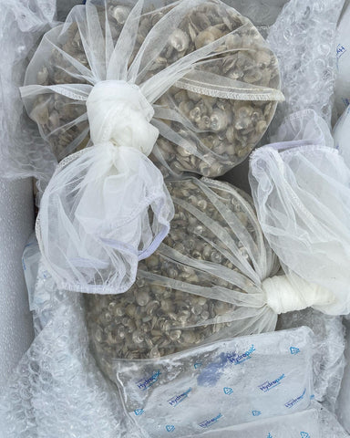
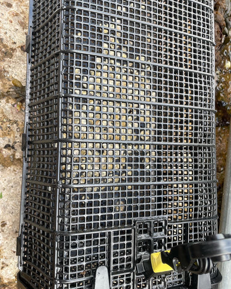

Deep Native Oyster Restoration – Phase 2
June 2022
The Background
As a company, Maorach Beag, is heavily involved in European Flat (Native) oyster restoration efforts, and we are the key supply chain supplier to the Glenmorangie Whisky Company’s ground breaking DEEP project.
This project aims to restore a massive European Native oyster reef to the Dornoch Firth, Scotland in front of the distillery. See this article for background on the project and the achievements so far.
Late last year, a decision was taken by Glenmorangie to embark upon the next phase of the project. During this phase the ground work for the large reef shall be put in place, and this includes a commitment to introduce 200,000 Native oysters (Ostrea edulis) into the Firth.
An exciting turn of affairs.
Sowing the Seeds / A’ cur an t-sil
So, after all the paperwork was signed and sealed, it was time to get started. After a wee delay we got the first of the phase 2 seed last week.

As always, ‘seed day’ is a wee bit stressful. It can be a nerve-wracking trying to get all the variables to line up, weather, tide, and delivery schedules.
Thankfully everything went as planned and the seed is now out on the farm, hopefully growing!
Dolly the Sheep!
A bit random, but have you heard of Dolly the Sheep?
She was a cloned sheep produced (is that even the right word?) by the Roslin Institute, a world leading institute for animal science research and a part of Edinburgh University.
We have been working with the Roslin Institute, not in cloning anything, but in experiments around the use of eDNA technology to detect pathogens.
Native oysters suffer from a very nasty disease called Bonamia. We are grateful to have one of the few Bonemia free oyster farms in Europe and it is incredibly important that it stays that way.
It has been recognised that the main vector of transmissions for diseases like this in the aquaculture industry is stock movement. So, bringing on new stock to our farm can be considered a very risky proposition.
Traditionally, the only way to detect the presence of disease is to perform destructive testing on animals, and the biggest downside to this is the associated cost which is very very expensive.
Sadly, it is simply not economic for a small scale industry to bare the costs of testing every batch and every movement, even if this represents the best course of action from a risk management perspective.
As a result, the industry has tended to fall back on a position of relying on testing provided and paid for by Government agencies, which is only done at set intervals. Unfortunately, these agencies also face budget constraints and so that interval can be variable and not as frequent as it could be.
This is where the Roslin Institute comes in. They have developed an eDNA protocol that allows the presence of disease to be detected from trace DNA found in water samples. Crucially as well as being accurate, this new process is also cost effective.
As such, before this new seed came onto our farm we went through a process with the Institute where both samples from our farm and the new seed batch were DNA tested for Bonemia. All these samples were negative (Phew!).
We are proud to be working with them to help validate and verify this test method, as we consider it to be a game changer for restoration focussed companies like us.

This has worked so well for us that we plan to build this methodology into our biosecurity protocol, and from this point on we shall not bring on or ship out oysters without having them tested in this manner.
The key take away is that if environmental restoration projects, like those we are involved with, are going to be successful, it is hugely important that all of us involved in the supply chain are rigorous in our application of biosecurity. Both for ourselves and for environment in which we operate.